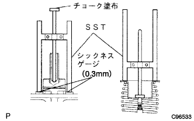
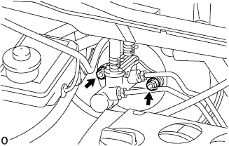
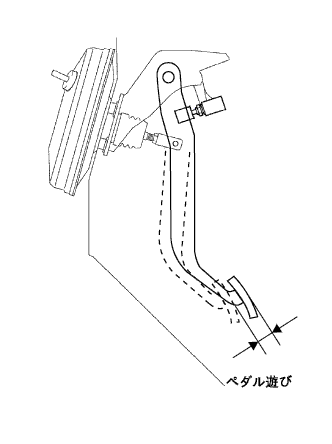

ブレーキ ブースタASSY 取り付け |
| 1. ブレーキ ブースタASSY取り付け |
新品のブレーキブースタガスケツトを介して、ブレーキブースタASSYを取り付ける。
クレビスロックナットおよびプッシュロッドクレビスをブレーキブースタASSYに取り付ける。
ナット4個を取り付ける。
クリップで、バキュームホースをバキュームチエックバルブに接続する。
| 2. ブレーキ マスタシリンダ リザーバ ブラケット取り付け |
ボルト3本で、ブレーキマスタシリンダリザーバブラケツトをボデーに取り付ける。
アクセルレータコントロールケーブルのクランプを取り付ける。
| 3. ブレーキブースタプッシュロッド点検·調整 |
エンジン停止状態でブレーキペダルを数回踏み、ブレーキブースタ内の負圧を抜く。
|  |
シツクネスゲージ(0.3mm)を介して、SSTをマスタシリンダに当てる。
SSTのロッドをマスタシリンダのピストンに軽く当て、固定する。
SSTのロッド平面にチヨークを塗布し、SSTを反転させてブレーキブースタASSYに取り付け、すき間を点検する。
 |
基準値外の場合はSSTを使用してロツドを固定し、ボツクスレンチ(7mm)を使用してロツド先端を回し、長さを調整する。
さらにボックスレンチ(7mm)を0.5回転(180°)回転させ、ロッド先端を0.5mm奥へ押し込む。(VSCなし車)
| 車両型式 | フレームNo. |
|---|---|
| NNP10-AGSGK | 0017402以降 |
| NNP11-AGSGK | 0019648以降 |
| 4. ブレーキマスタ シリンダSUB-ASSY取り付け |
|  |
ナット2個で、ブレーキマスタシリンダASSYをブレーキブースタASSYに取り付ける。
ブレーキマスタシリンダリザーバのつめ部をマスタシリンダリザーバブラケツトに合わせて、ボルトを取り付ける。
 |
ユニオンナットレンチ１０を使用して、ブレーキチユーブ２本をブレーキマスタシリンダASSYに接続する。
ブレーキフルードレベルウオーニングスイッチコネクタをブレーキマスタシリンダリザーバに接続する。
| 5. フロントブレーキ チューブ NO.4接続 |
 |
ユニオンナットレンチ１０を使用して、フロントブレーキチユーブNo.4をフロントブレーキチユーブNo.3および、フロントフレキシブルホースNo.1に接続する。
グロメットをボデーに取り付ける。
| 6. ブレーキマスタシリンダプッシュロッド クレビス接続 |
プッシュロッドクレビスピンで、プッシュロッドクレビスをブレーキペダルに接続する。
クリップをプッシュロッドクレビスピンに取り付ける。
ニードルノーズプライヤーを使用して、ブレーキペダルリターンスプリングを取り付ける。
| 7. ブレーキペダル高さ点検·調整 |
ブレーキペダル高さ点検
ブレーキペダル高さ調整
コネクターをストツプランプスイツチから切り離す。
ストツプランプスイツチのロツクナットをゆるめ、ストツプランプスイッチを回してペダルを遊ばせる。
クレビスロックナットをゆるめ、プツシユロッドを回してブレーキペダル高さを調整する。
ストツプランプスイツチのねじ端部とブレーキペダルのクツシヨンの隙間が0.5-2.4mmになるようにストツプランプスイツチを調整し、ロツクナットおよびクレビスロツクナットを締め付ける。
コネクタをストツプランプスイツチに接続する。
 |
ブレーキペダルを踏まない状態でストツプランプが点灯しないことを確認する。
| 8. ブレーキペダル遊び点検 |
エンジン停止後ブレーキペダルを数回強く踏み込み、ブレーキブースタ内の負圧がない状態にする。
|  |
ブレーキペダルを軽く指で押して、ブレーキペダルの遊びを点検する。
| 9. ブレーキペダル踏み残りしろ点検 |
ブレーキペダルを踏力500N {51kgf} で踏込んだ時の踏み残り代を点検する。
| 10. ブレーキシステムエア抜き |
| 11. ブレーキフルード漏れ点検 |
| 12. ブレーキ引きずり点検 |
| 13. カウルトップ パネル OUT取り付け |
ボルト１０本で、カウルトップパネルOUTを取り付ける。
| 14. ウインドシールド ワイパ リンクASSY取り付け |
 |
ウインドシールドワイパリンクASSYをウインドシールドワイパモータASSYが付いた状態でピンのかん合にはめ込む。
ボルト2本で、ウインドシールドワイパリンクASSYを取り付ける。
コネクタを接続する。
| 15. カウルトップベンチレータ ルーバ LH取り付け |
 |
クリップとツメ8個をかん合させ、カウルトップベンチレータルーバLHを取り付ける。
| 16. カウルトップベンチレータ ルーバ RH取り付け |
 |
クリップ2個とツメ7箇所をかん合させ、カウルトップベンチレータルーバRHを取り付ける。
| 17. フード トゥー カウルトップ シール取り付け |
 |
クリップ6個をかん合させ、ボンネット(フ-ド)ツウカウルトップシールを取り付ける。
| 18. フロントワイパアームRH取り付け |
 |
ワイパピボットセレーション部をワイヤブラシで清掃する。
ワイパアームセレーション部を丸やすり等で清掃する。(再組付け時)
図の位置にフロントワイパブレードがくるようにフロントワイパアームRHをナットで取り付ける。
| 19. フロントワイパアームLH取り付け |
ワイパピボットセレーション部をワイヤブラシで清掃する。
ワイパアームセレーション部を丸やすり等で清掃する。(再組付け時)
 |
図の位置にフロントワイパブレードがくるようにフロントワイパアームLHをナットで取り付ける。
水またはウォッシャ液をガラスにかけながらフロントワイパを作動させ、ブレードの払拭状態およびボデーと干渉しないことを確認する。
| 20. ウインドシールド ワイパ アーム カバー取り付け |